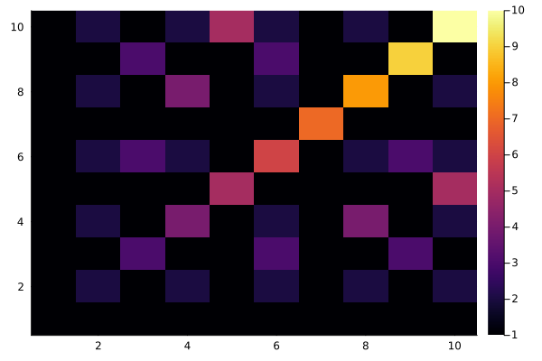
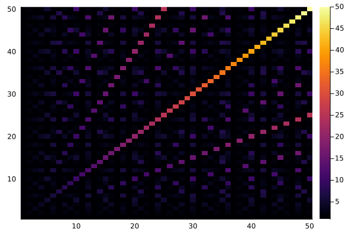
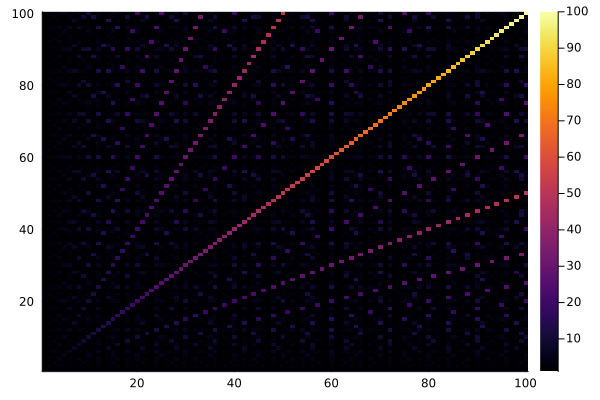
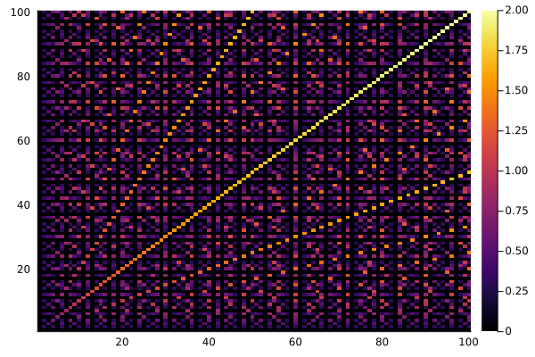
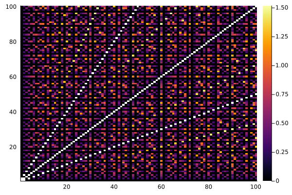

Chapter 1.1: Euclids algorithm
Algorithm E: Euclids algorithm for finding gcd(m,n)
Input: m, n positive integers.
- E1 [ find remainder ] r = m % n
- E2 [ is remainder zero ] r == 0 && return(n)
- E3 Reduce = (n,r) . Goto E1
Let's implement in Julia:
function E(m,n)
while (r = m % n) != 0
(m,n) = (n,r)
end
n
end
Analysis
Knuth's goes a bit into the analysis be looking at the average number of iterations neded for a given $n$.
\[T_n\]
: = average over all integers m > 0 of time sstep E1 of the algorithm E is performed. [p 7]
He argues that we only need to check $m <= n$, so we get the following implementation:
function T(n0)
i=0
for m in 1:n0
n = n0
while (r = m % n) != 0
(m,n) = (n,r)
i = i + 1
end
@debug m, n, i
end
i/n0
endHe claims that asymptotically, this is $12\log(2)/\pi^2 \log(n)$. we can check this by plotting.
using Plots
f(n) = 12log(2)/pi^2*log(n)
n = 1000; plot([T.(1:n) f.(1:n)], label=["T(n)" "12log(2)/pi^2log(n)"], title="Average number of iterations of gcd")
We can also estimate it by fitting a log curve to the simulation and plot the difference between the estimated coefficient and the stated one:
using LsqFit, Plots
model(x,p) = p[1]*log.(x)
p0 = [1.]
n = 500; f1 = curve_fit(model, 1.:n, T.(1.:n), p0)
coef(f1)[1]*pi^2/log(2)-12
function residual(n)
model(x,p) = p[1]*log.(x)
p0 = [1.]
f1 = curve_fit(model, 1.:n, T.(1.:n), p0)
coef(f1)[1] - 12log(2)/pi^2
end
plot(100:100:1000,residual.(100:100:1000), ylims=[residual(100)*1.1,0], label="residual", title="Coefficient - 12log(2)/pi^2")
Speed
Julia already has euclid's algorithm implemented in the function gcd. Interstingly it is 10x faster fan mine:
julia> @btime E(1560,270)
16.325 ns (0 allocations: 0 bytes)
30
julia> @btime gcd(1560,270)
1.649 ns (0 allocations: 0 bytes)
30The code is very simple:
function gcd(a::T, b::T) where T<:Integer
while b != 0
t = b
b = rem(a, b)
a = t
end
checked_abs(a)
end
However, this in not actually what gets called. This is (Stein's algorithm):
@pure function _gcd(a::T, b::T) where T<:BitInteger
za = trailing_zeros(a)
zb = trailing_zeros(b)
k = min(za, zb)
u = unsigned(abs(a >> za))
v = unsigned(abs(b >> zb))
while u != v
if u > v
u, v = v, u
end
v -= u
v >>= trailing_zeros(v)
end
r = u << k
return r % T
end
The <:Integer version is actually marginally slower than mine:
julia> function gcd1(a::T, b::T) where T<:Integer
while b != 0
t = b
b = rem(a, b)
a = t
end
a
end
gcd1 (generic function with 1 method)
julia> @btime gcd1(1560,270)
18.704 ns (0 allocations: 0 bytes)
30The extended Euclid algorithm is also in julia as gcdx:
ulia> @btime gcdx(1560,270)
1.649 ns (0 allocations: 0 bytes)
(30, 4, -23)
Playing
How doe the common greatest divisors look?
using Plots
heatmap([gcd(x, y) for x in 1:10, y in 1:10]))
heatmap([gcd(x, y) for x in 1:50, y in 1:50])
heatmap([gcd(x, y) for x in 1:100, y in 1:100])) )
To see the finer details, we take the log:
heatmap([log10(gcd(x, y)) for x in 1:100, y in 1:100]))
Removing the dominating ideals brings out a bit more contrast:
heatmap([((x == y ) | ( x == 2*y) | (2*x == y)) ? missing : log10(gcd(x, y)) for x in 1:100, y in 1:100]))